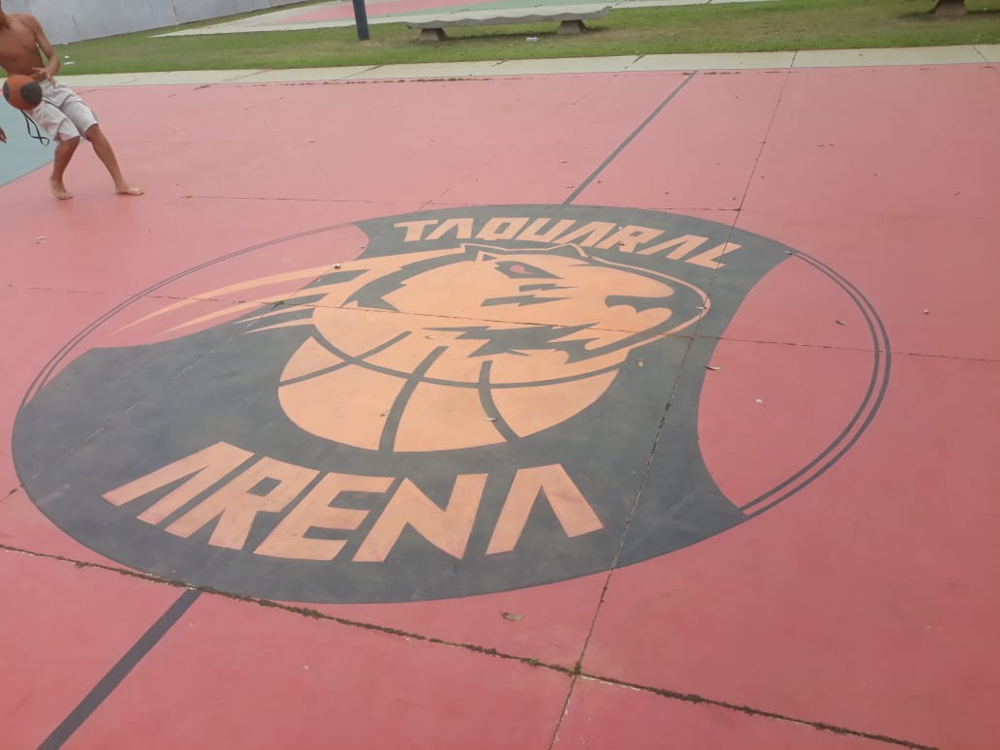
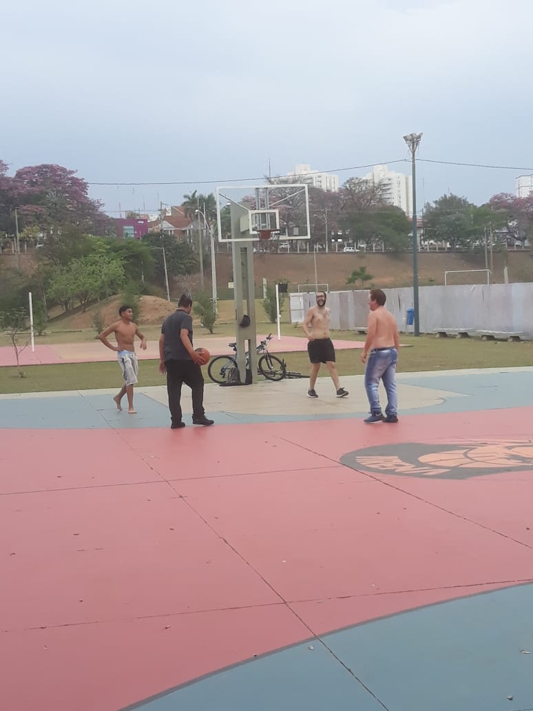
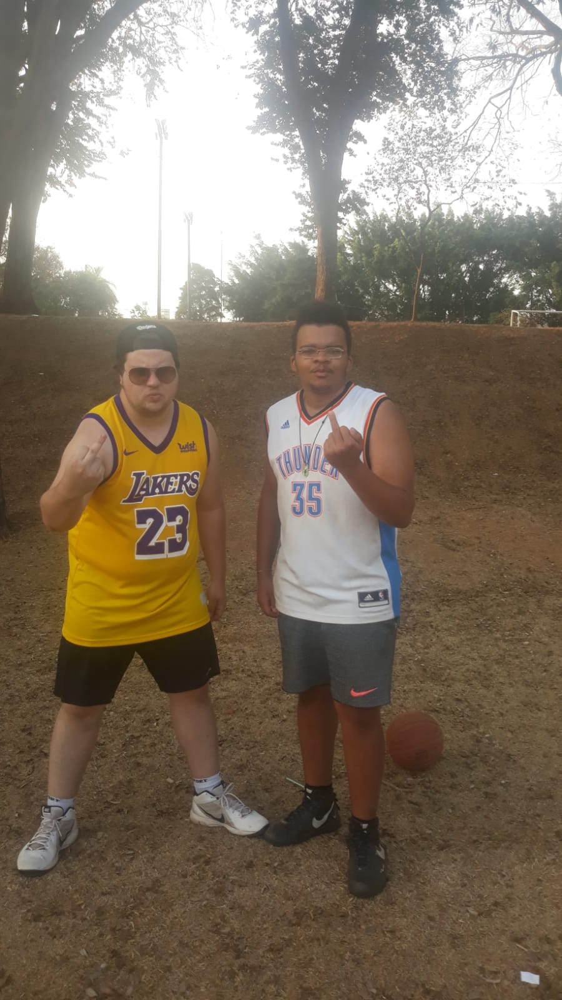
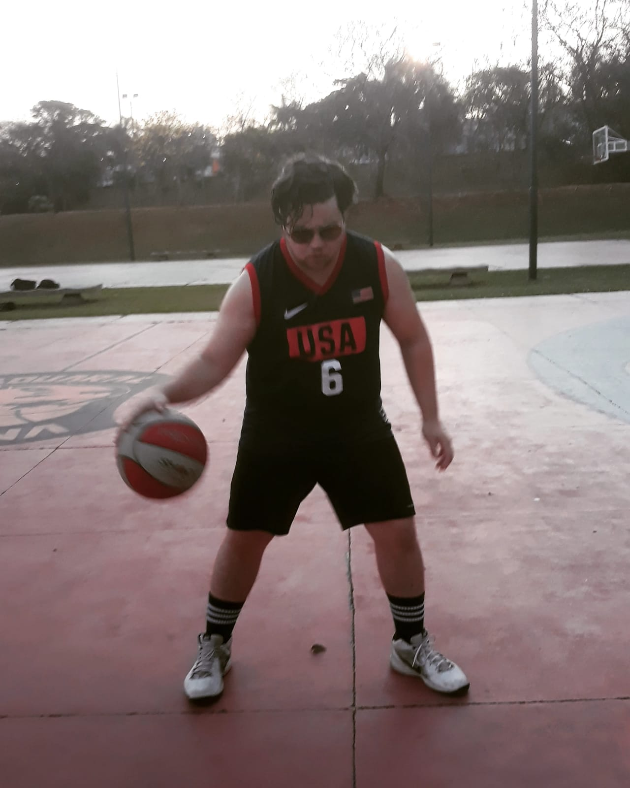
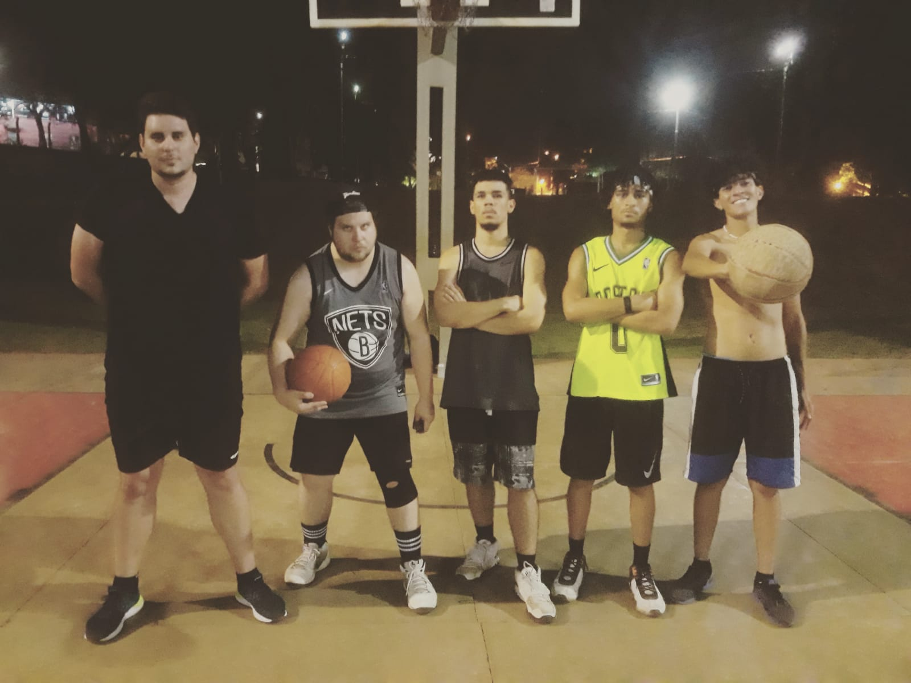

Arena Taquaral Campinas localizada dentro do parque portugal, também conhecido como lagoa do taquaral, conta com 3 ótimas quadras para prática do basketball, esporte composto por 5 jogadores de cada time tentando fazer pontos na cesta do time adversario.

O Basketball tradicional é jogado em 4 tempos de 10 minutos cada, porém esses 10 minutos são corridos apenas quando a bola está em quadra, qualquer parada de jogo o relogio também e pausado por exemplo: faltas, bola foras da quadra, jogadores caídos, tempo pedido pelo técnico do time, todos esses fatores o relogio é pausado imediatamente. Cada time tem 24 segundos em posse de bola para fazer uma jogada com ponto, se em 24 segundos o time não conseguir fazer uma jogada , a bola irá para o time adversario. O time que estiver com a posse de bola tem 8 segundos para ultrapassar a linha da metade da quadra e após a bola ter passado esta linha, não poderá voltar para trás da linha do meio de quadra. Vence o time que fazer mais pontos até o final do tempo.

O basquete 3x3 é uma modalidade muito comum em quadras de rua e parques, consiste em times de 3 jogadores usando apenas metade da quadra e com o jogo finalizando com o primeiro time que fazer 21 pontos primeiro. O jogo se inicia de um lance livre, após isso os times começam a se confrontar e caso um time jogue a bola e a mesma apenas toque o aro da tabela de basquete, o time adversário caso recupere a bola deverá sair dentro da zona do garrafão para que possa marcar o ponto, caso a bola toque apenas a tabela, o time adversário poderá aproveitar o rebote para marcar pontos. Cada time deverá contar seus pontos e nao deixar que ultrapasse 21 pontos, caso ultrapasse, a pontuação do time reduzirá para 11 pontos.

O basquete x1 ou também conhecido em alguns lugares como mano a mano, consiste em uma partida de somente dois jogadores um contra o outro com cada ponto valendo somente 1 ponto e com o jogo finalizando ao final de 3 ou 10 pontos. Cada jogador tem direito a uma jogada, caso seja feito o arremesso porém não houve ponto, a bola vai para o jogador adversário! Confiram o video na parte superior do site !

Leandro Nogueira, Pedro Oliveira, Rafael Cipriane, Julio Thiago e Matheus Nunes, frequentadores da arena Taquaral, falam sobre a importância do esporte para o corpo e mente: Neste momento tão dificil que estamos passando com tudo o que houve devido a pandemia covid-19 o basquete nos permitiu fazer novos amigos, ter o equilíbrio entre o corpo e a mente, esvaziar a mente de problemas pessoais no nosso dia a dia e também conhecer uma modalidade diferente, pois em nosso país geralmente o futebol é o esporte mais praticado e o basquete acaba ficando de fora muitas vezes.

Copyright © 2021 | Pedro de Oliveira Neto- All Rights Reserved.